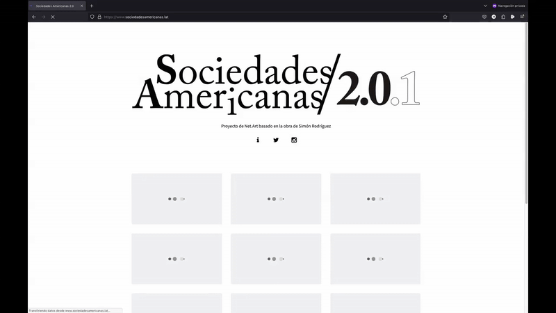

Sociedades Americanas 2.0 (2020 - ∞ )

Sociedades Americanas 2.0 es un proyecto de Net.Art en proceso cuyo objetivo es llevar a las plataformas digitales web el repertorio de sentencias, reflexiones y pensamientos del maestro y filósofo venezolano Simón Rodríguez (1769-1854).
El proyecto usa animación digital y la técnica del Kinetic Text para recrear su sintaxis visual, en la cual distintas tipografías, puntaje, llaves, corchetes y disposición de las palabras buscan una comprensión integral de sus ideas orientadas a la educación popular y la formación de sociedades republicanas.
Ver el proyecto en su sitio web:
https://www.sociedadesamericanas.lat/
Consultar el dossier del proyecto: